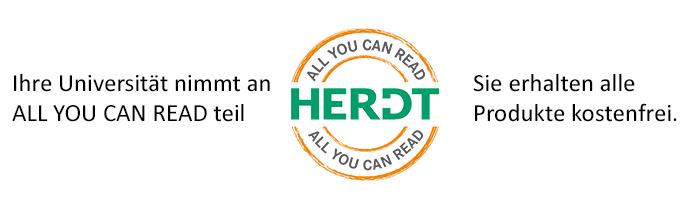

Der HERDT-Verlag ist einer der führenden Anbieter von IT-Bildungsmedien. Unsere Lernmedien decken mehr als 500 IT-Themen von Microsoft-Office-Anwendungen über Datenbanksysteme bis hin zu Netzwerktechniken und den neuesten Designprogrammen ab. Mit unserem Angebot ALL YOU CAN READ stellen wir allen Studierenden, MitarbeiterInnen und Lehrenden die bewährten HERDT-Lernunterlagen als PDF-Download, inklusive aller digitalen Zusatzmedien zur Verfügung.